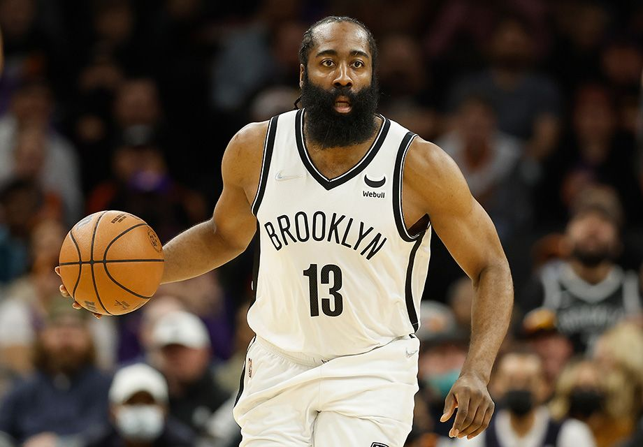

Харден больше не суперстар? Борода обогнал Леброна по промахам и разочаровал болельщиков
Неужели так и останется без титула и без максимального контракта?
Джеймс Харден – один из самых обсуждаемых игроков в нынешнем сезоне. После громкого обмена в «Филадельфию» на его дуэт с Джоэлом Эмбиидом возлагали большие надежды. Однако ожиданий поклонников «Сиксерс» защитник пока не оправдывает – Борода проводит один из худших сезонов в плей-офф со времён выступления за «Оклахому».

Сейчас «Сиксерс» борются с «Майами» в полуфинале Восточной конференции.
И от 0-3 команду спасло только возвращение Эмбиида. В одиночку Харден выглядел совсем печально.
Он медленный и, как сказал Эмбиид, недостаточно агрессивный. Он не набирает очки.
Не только потому, что имеют место проблемы с реализацией, но и потому, что реализовывать-то и нечего – Джеймс просто не бросает.
Он провёл за «Филадельфию» 30 матчей, ни в одном из которых не сделал 20 попыток.
Даже если Харден и приближается к этой отметке, примерно две трети бросков он всё равно не попадает.
Он никогда не был особенно хорош по этому показателю, но по сравнению с его пиком разница существенная.
Недавно Харден установил антирекорд НБА по количеству «кирпичей» в плей-офф – 2782.
По этому показателю он обошёл Леброна Джеймса (2777), на что ему потребовалось аж на 800 попыток меньше.
Вот и получается, что уже в 12 матчах плей-офф подряд Харден не может преодолеть отметку в 25 набранных очков.
Это самая продолжительная подобная серия с тех пор, как он выходил со скамейки в «Тандер».
А это, кстати, было больше 10 лет назад. Помимо этого, в копилке Хардена 18 матчей плей-офф,
в которых он умудрился реализовать менее 40% с игры при пяти и более перехватах.
С 1978 года больше подобных матчей провели только Леброн Джеймс (22) и Расселл Уэстбрук (20).